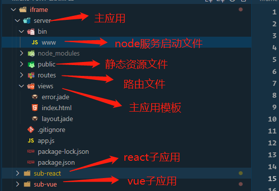
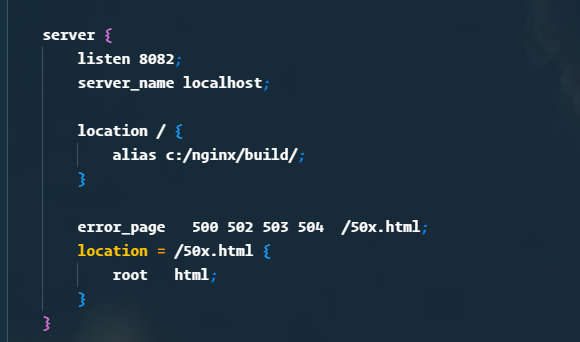

微前端qiankun实践
分享人：漆林杰
来自武汉客服系统团队IM前端组
微前端是什么？
微前端就是与多个可以独立发布功能的团队一起构建现代化web应用程序的技术、策略和方法，将大而可怕的事物分割成更小、更易于管理的部分， 然后明确它们之间的依赖关系。我们的技术选择，我们的代码库，我们的团队，以及我们的发布过程都应该能够相互独立地操作和进化，而不需要过度的协调。 微前端架构是一种类似于微服务的架构，它将微服务的理念应用于浏览器端，即将 Web 应用由单一的单体应用转变为多个小型前端应用聚合为一的应用
微前端架构具备以下几个核心价值
- 技术栈无关 主框架不限制接入应用的技术栈，微应用具备完全自主权
- 独立开发、独立部署 微应用仓库独立，前后端可独立开发，部署完成后主框架自动完成同步更新
- 增量升级 在面对各种复杂场景时，我们通常很难对一个已经存在的系统做全量的技术栈升级或重构，而微前端是一种非常好的实施渐进式重构的手段和策略
- 独立运行时 每个微应用之间状态隔离，运行时状态不共享
分享背景
在之前的工作中通过iframe嵌入和nginx代理的方式实现的微前端我都有接触, 在这个过程中，不管是iframe的方式或者是nginx的方式在开发和部署的时候都相对来说比较麻烦，于是乎就萌生了一个想法- 对现有的这种微前端的方式做一个改造，在经过一系列的调研之后选中了阿里qiankun，后期因为个人原因没有实现这种架构的 改造，所以今天就借着这个机会和大家一起来探讨一下乾坤这个框架
iframe
iframe 虽不是为微前端而生，但是是集成的最简单方式之一。本质上来说，iframe 里的页面是完全独立的， 而且 iframe 还提供了很多的隔离机制，我们只需将单体的前端应用，按照业务模块进行拆分，分别部署，最后通过 iframe 进行动态加载即可
- 优点：实现简单，运行稳定，天然具备隔离性。
- 缺点：主页面和 iframe 共享最大允许的 HTTP 链接数，iframe 阻塞主页面加载，浏览器的后退按钮无效， 性能低、通信复杂、双滚动条、弹窗无法全局覆盖，它的扩展性不高，只适合简单的页面渲染。
<el-tab-pane
v-for="item in tabList"
:label="item.label"
:name="item.name"
>
<iframe
v-show="activeTab === item.name"
:src="item.src"
>
</iframe>
</el-tab-pane>
tabList: [
{
name: 'sub-vue',
label: 'sub-vue',
src: 'http://localhost:8080'
},
{
name: 'sub-react',
label: 'sub-react',
src: 'http://localhost:8081'
},
]
目录结构
部署
运行npm run build将子应用打包 nginx配置文件开启两个端口，启动nginx，就可以访问了 主要问题
- 子应用之间，子应用与主应用之间的通信问题
- 主应用和子应用之间cookie共享
- iframe状态保存与卡顿问题
qiankun
qiankun核心设计理念
-
- 简单 由于主应用微应用都能做到技术栈无关，qiankun 对于用户而言只是一个类似 jQuery 的库， 你需要调用几个 qiankun 的 API 即可完成应用的微前端改造。同时由于 qiankun 的 HTML entry 及沙箱的设计， 使得微应用的接入像使用 iframe 一样简单
- 解耦/技术栈无关 微前端的核心目标是将巨石应用拆解成若干可以自治的松耦合微应用，而 qiankun 的诸多设计均是秉持这一原则， 如 HTML entry、沙箱、应用间通信等。这样才能确保微应用真正具备 独立开发、独立运行 的能力
特性
-
- 基于 single-spa 封装 提供了更加开箱即用的 API
- 技术栈无关 任意技术栈的应用均可 使用/接入，不论是 React/Vue/Angular/JQuery 还是其他等框架
- HTML Entry 接入方式 让你接入微应用像使用 iframe 一样简单
- 样式隔离 确保微应用之间样式互相不干扰
- JS 沙箱 确保微应用之间 全局变量/事件 不冲突
- 资源预加载 在浏览器空闲时间预加载未打开的微应用资源，加速微应用打开速度
- umi 插件 提供了 @umijs/plugin-qiankun 供 umi 应用一键切换成微前端架构系统

iPhone 7
3D Touch, 12MP photos, and 4K video.
Every iPhone they have made was built on the same belief. That a phone should be more than a collection of features. That, above all, a phone should be absolutely simple, beautiful, and magical to use.
iPhone 7
We worked closely with the very talented people at Acme and created a new website. Content demo.
- Client: Apple (2016)
- Services: Web Design
- Website: apple.com/iphone
-
Ultra-Fast WiFi
Faster LTE with the best worldwide roaming. -
Two cameras that shoot as one.
12MP wide angle. -
Lifetime Warranty
We'll fix it or if we can't, we'll replace it.
Pay
Redesigning Pay
We've been working with the Acme team over the last three months to build a new app.
Payments Made Simple
Apple Pay is so easy. Pay with your debit cards and credit cards with just a touch.
Secure
Your card is never stored. Apple Pay uses a device-specific number and unique transaction code.
Universal
Apple Pay works with most major credit and debit cards from nearly all banks.
-
Incredibly fast
Just hold your iPhone near the reader. -
Works with all major banks
Apple Pay is accepted in restaurants, hotels... -
The safer way to pay
Your card number is never stored.
Pay
Use your iPhone to pay securely and easily at over a million store locations and within apps — with a single touch. See where you can use Apple Pay:
I'm an optimist in the sense that I believe humans are noble and honorable, and some of them are really smart. I have a very optimistic view of individuals.
Steve Jobs.
“We see that privacy is a fundamental human right that people have. We are going to do everything that we can to help maintain that trust.”
Tim Cook, CEO of Apple.
Header .alignright
Simple CSS Alignments
Put content wherever you want.
4/9 left center
The Apple III is a business-oriented personal computer that was intended as the successor to the Apple II series.
.content-left
5/9 center
Apple Lisa was one of the first personal computers to offer a graphical user interface.
.content-center
6/9 right center
The Macintosh was the company's first mass-market personal computer featuring a GUI and mouse.
.content-right
CSS Animations
Fadein transition to all slides.
<article id="webslides">
<section>
<div class="wrap fadeInUp">
<h1>Slide</h1>
</div>
</section>
</article>
Just 5 basic animations: .fadeIn, .fadeInUp, .zoomIn, .slideInLeft, and .slideInRight.
Embedding Media
YouTube API
Embed videos with loop, autoplay, and muted attributes. The video will automatically play when the slide is loaded.
<div class="embed"> <div data-youtube data-youtube-id="CQY3KUR3VzM" data-autoplay ></div> </div>
.embed (responsive)
Be Awesome
Think Different
Overlay: fullscreen.bg-black > .embed.dark or .light